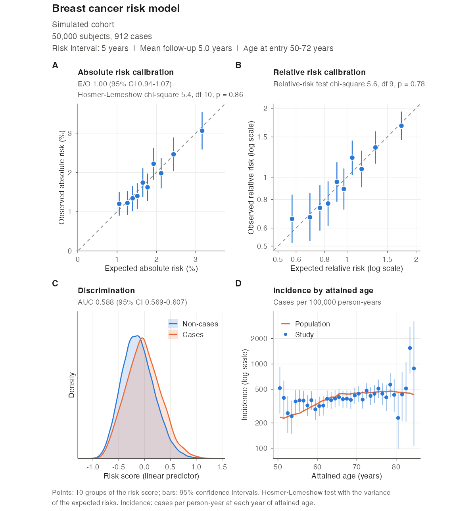

This is not the official iCARE distribution. The official R package iCARE is developed by its authors and distributed by Bioconductor: https://bioconductor.org/packages/iCARE/. Install it with
BiocManager::install("iCARE"). Its source code is at git.bioconductor.org/packages/iCARE (mirrored at github.com/bioc/iCARE), and its development repository is github.com/parichoy/iCARE. Questions about the official package should go to its maintainers; questions about this distribution go to this repository’s issues.
iCARE (Individualized Coherent Absolute Risk Estimation; Pal Choudhury et al., 2020) builds, applies and validates models for the absolute risk of a disease. A model combines relative risks of risk factors (classical risk factors and SNPs), a reference sample representing the population, age-specific incidence rates of the disease, and competing mortality rates. Risks are computed coherently for people with missing risk factors, and models can be validated in cohort and nested case-control studies.
Purpose of this repository
This repository refactors iCARE from scratch, keeping its user-facing interface (the same functions, arguments and result names) so that existing scripts keep working. Its goals are
- correctness: every known defect of the official version is fixed (see the differences below), including the fixes first made in iCARE 1.33.1.9002, a patched development version prepared by the maintainer of this distribution;
- maintainability: small, documented modules with descriptive names, and a test suite that checks each module against brute-force computations and recorded outputs of earlier versions;
- speed without compiled code: vectorized R that is faster than the official C code on every benchmark;
- usability: publication-ready figures and documentation for a wide audience.
Installation
This distribution is installed from GitHub. It is pure R, so no compiler is needed:
# install.packages("remotes")
remotes::install_github("jeyabbalas/icare")To build the vignettes too (slower):
remotes::install_github("jeyabbalas/icare", build_vignettes = TRUE)The package is named iCARE, like the official one, so installing it replaces an official iCARE in the same library. To keep both, install this one into a separate library and load it from there:
dir.create("~/R/icare-unofficial", recursive = TRUE, showWarnings = FALSE)
remotes::install_github("jeyabbalas/icare", lib = "~/R/icare-unofficial")
library(iCARE, lib.loc = "~/R/icare-unofficial")To return to the official version: remove.packages("iCARE"), then BiocManager::install("iCARE").
Quick start
library(iCARE)
data("bc_data", package = "iCARE")
# 30-year breast cancer risk from age 50 for three women
risks <- computeAbsoluteRisk(
model.formula = bc_model_formula,
model.cov.info = bc_model_cov_info,
model.log.RR = bc_model_log_or,
model.ref.dataset = ref_cov_dat,
model.disease.incidence.rates = bc_inc,
model.competing.incidence.rates = mort_inc,
apply.age.start = 50,
apply.age.interval.length = 30,
apply.cov.profile = new_cov_prof
)
risks
# Validate 5-year risks in a cohort
cohort <- validation.cohort.data
validation <- ModelValidation(
study.data = cohort,
predicted.risk.interval = 5,
iCARE.model.object = list(
model.formula = bc_model_formula,
model.cov.info = bc_model_cov_info,
model.log.RR = bc_model_log_or,
model.ref.dataset = ref_cov_dat,
model.disease.incidence.rates = bc_inc,
model.competing.incidence.rates = mort_inc,
apply.cov.profile = cohort[, all.vars(bc_model_formula)[-1]]
),
dataset = "Simulated cohort",
model.name = "Breast cancer risk model"
)
validation # report
plotModelValidation(validation.results = validation) # figureExample figure
The last line of the quick start draws this figure, ready for publication:

- A. Absolute risk calibration: observed against expected risk in each decile of the risk score, with the E/O ratio and the Hosmer-Lemeshow test.
- B. Relative risk calibration: observed against expected relative risks, with the relative-risk test.
- C. Discrimination: the risk scores of cases and non-cases, with the AUC.
- D. Incidence by attained age: the study’s incidence rates, with 95% confidence intervals, against the population rates of the model.
The panels are square, and the calibration panels use equal axes. The figure is a patchwork object, which can be modified or saved with ggplot2::ggsave(). panels selects other layouts, such as calibration next to the E/O ratio of each risk group (see the validation article).
Documentation
The website https://jeyabbalas.github.io/icare/ has the function reference and four articles, also available as vignettes:
- Getting started: building a model, missing risk factors, SNPs, split intervals;
- Validating an absolute risk model: calibration, discrimination and the figures, with the statistical details;
- Differences from the official iCARE: each change, why it was made and its effect;
- Performance: timings against the official version.
Differences from the official iCARE
The comparison is with Bioconductor iCARE 1.40.0. Changes marked † were first made in 1.33.1.9002. The article Differences from the official iCARE explains each one.
Implementation
- Pure, vectorized R. The C code and the
use.c.codeargument are removed (use.c.codeis accepted with a deprecation warning and ignored). - Faster than the official compiled code on every benchmark (see Performance).
- Dependencies:
ggplot2andpatchworkreplaceplotrix,gtoolsandHmisc. -
ModelValidation()builds the model once for the study and the reference population. - Invalid inputs stop with errors that name the argument and the problem; nothing is printed to the console.
Absolute risks (computeAbsoluteRisk())
- The reference weights are used correctly in the calibration of the baseline hazard; the official version scrambled non-uniform weights. †
- Fractional start ages and interval lengths are used exactly (the official version rounded fractional starts up and counted any fraction of a year as a whole year).
- Only the years of age inside the intervals need rates. In the official version, a missing rate at the age where an interval ends (such as the example mortality rates from age 85) made the risks
NAor, when intervals differed, silently replaced every profile’s risk by its percentile-bin average; this also affectedModelValidation()when it computed the risks. - Incidence and mortality rates given by age band (three columns) are read correctly (the official version divided each band’s rate among its ages).
- A profile with missing risk factors keeps its own observed risk factors, completed with the donors’ values of the missing ones, as in the published method. The official code averaged the donors’ own risks, which can differ by more than 10% for profiles in the tails of the risk distribution.
- A profile with missing risk factors gets the risk over its own interval, independently of the other profiles. †
- With SNPs, the attenuation of the family-history log relative risk applies in any coding of family history.
- Columns of
apply.snp.profilenamed after the SNPs are matched by name (the official version used their order). - For SNP-only models,
refs.riskholds the risks of simulated people, not averages over then.impsets of simulated people (which made the population distribution far too narrow). - A single profile with a model of continuous covariates only works.
- Formulas that give infinite or undefined design values are rejected.
- The calibrated baseline hazard is returned (
attr(result, "calibration")). -
print(),summary()andplot()methods.
Split intervals (computeAbsoluteRiskSplitInterval())
- The risk is
AR1 + S1 * AR2, withS1the probability of reaching the cut age alive and free of the disease; the officialAR1 + (1 - AR1) * AR2ignores death from other causes before the cut age and overstates the risk. - The reference weights are kept after the cut age, and
return.refs.riskis passed through with a single model. †
Model validation (ModelValidation())
- The AUC counts tied risk scores as 1/2 (the official version counted them as 0). †
- The AUC is computed in O(n log n) time and O(n) memory instead of building a cases × non-cases matrix.
- The Hosmer-Lemeshow statistic uses the variance under the null hypothesis by default, as the classical test does;
hosmer.lemeshow.variance = "observed"gives the official statistic, which rejects calibrated models too often when groups have few cases. - In sampled studies, the E/O confidence interval accounts for the variability of the expected risk and its covariance with the observed risk.
- Risk-score groups: tied scores form their own groups, no subject is left out, empty groups are dropped, duplicated or out-of-range cut-offs are ignored, and the degrees of freedom follow the number of groups formed. †
- A supplied
predicted.riskorlinear.predictoris never recomputed; the reference weights andn.impiniCARE.model.objectare used. † - Onsets recorded after exit are censored at exit consistently, with a warning. †
- Cases diagnosed at exit are kept when ages have decimals; rounding error in exit minus entry made the official version drop many of them.
- The study incidence is the person-time rate by attained age, with confidence intervals, cases and person-years.
- Reference risks use each reference row’s own window, and, with SNPs, each row’s own risk score.
-
Category_Resultsis numeric and adds each group’s E/O with its confidence interval and the numbers of subjects and cases;Category_Specific_Expected_to_Observed_Ratiois new. - Clear checks: an error without a validation interval, cases need a finite onset (non-cases may have
InforNA), unknown names iniCARE.model.objectare reported;use.c.code,return.lpandreturn.refs.riskin the model object are ignored. - Precise small p-values, and descriptive labels in the test results.
Figures (plotModelValidation())
- Redrawn with ggplot2: square panels with equal axes for calibration, each panel showing its statistics, incidence by attained age for the study and the population, and an optional panel of E/O by risk group.
- Returns the figure, to modify or save with
ggplot2::ggsave().risk.score.plot.percent.smoothis accepted and ignored.
Performance
Median elapsed time (seconds) on an Apple M5 Pro with R 4.6.2:
| Workload | This distribution | Official 1.40.0, C code | Official 1.40.0, R code | 1.33.1.9002, C code | Speed-up vs official C |
|---|---|---|---|---|---|
| Risks, 10,000 complete profiles | 0.17 | 13.2 | 51.4 | 13.8 | 79.9× |
| Risks, 2,000 profiles with missing covariates | 0.94 | 2.97 | 7.63 | 3.06 | 3.2× |
| Risks with 72 SNPs, 1,000 profiles with missing genotypes | 7.43 | 12.2 | 28.1 | 11.6 | 1.6× |
| Split-interval risks, 2,000 profiles | 0.22 | 0.51 | 0.48 | 0.51 | 2.3× |
| Validation, full cohort (49,767), risks supplied | 0.048 | 0.96 | 0.82 | 1.18 | 20.0× |
| Validation, nested case-control (5,240), risks supplied | 0.010 | 0.21 | 0.21 | 0.22 | 20.9× |
| Validation, 10,000 subjects, risks computed | 0.17 | 0.39 | 0.38 | 0.40 | 2.3× |
Timings come from tools/benchmarks; see the Performance article.
Testing
The test suite (testthat) checks each module against direct implementations of its definition, for example risks against the defining sum year by year, missing-data risks against an explicit average over donors, and the AUC against a pairwise count, and checks the results against recorded outputs of the official version 1.40.0 and of 1.33.1.9002 where those are correct. Run it with devtools::test().
A simulation study, tools/simulations/validation-simulation.R, checks that the confidence intervals of ModelValidation() have their nominal coverage and that its tests have their nominal size. The results are in the validation article.
Citation
Please cite the article describing iCARE:
Pal Choudhury P, Maas P, Wilcox A, Wheeler W, Brook M, Check D, Garcia-Closas M, Chatterjee N (2020). iCARE: An R package to build, validate and apply absolute risk models. PLoS ONE 15(2): e0228198. https://doi.org/10.1371/journal.pone.0228198
and state that you used this distribution, with its version (citation("iCARE")).
License and authors
iCARE was written by Parichoy Pal Choudhury, Paige Maas, William Wheeler and Nilanjan Chatterjee. This distribution is maintained by Jeya Balaji Balasubramanian. It is distributed under the GPL-3 with the license agreement of the official package (see LICENSE), which states that the software is not intended for treating or diagnosing human subjects.